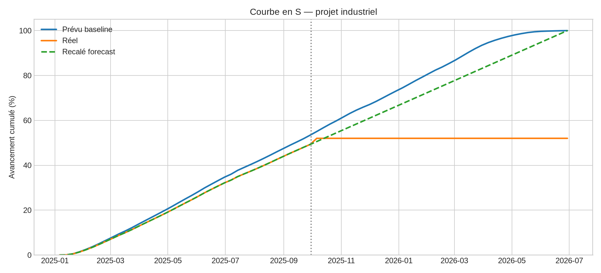
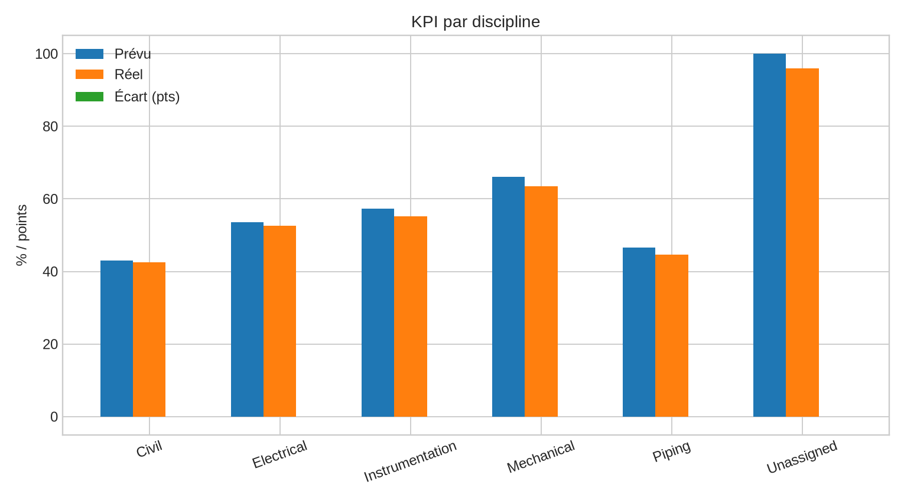
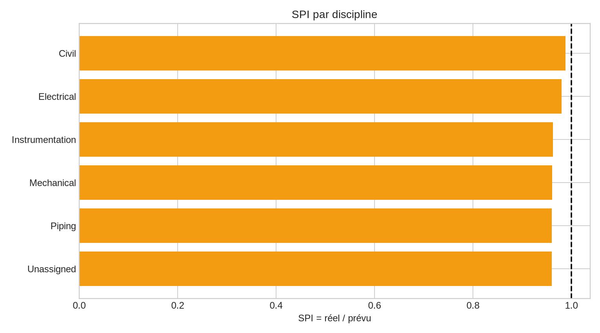

Reporting d'avancement — Courbes en S
Data Date : 30 septembre 2025. Reporting simulé au format Primavera P6 pour un projet industriel de 18 mois.
KPI projet
53,4 %
prévu baseline
49,3 %
réel
-4,1 pts
écart
0,922
SPI
300
activités brutes
5
anomalies volontaires
Courbe en S

KPI par discipline


Documentation
README · Classeur Excel · Méthode courbe en S · Standard reporting · Power BI